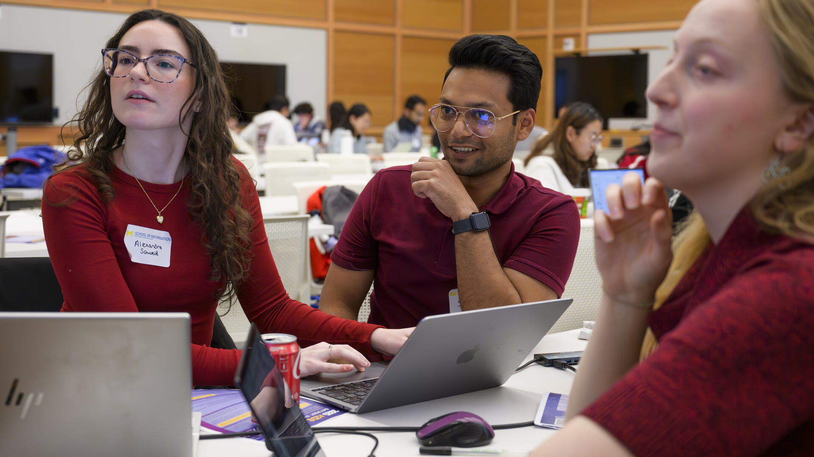
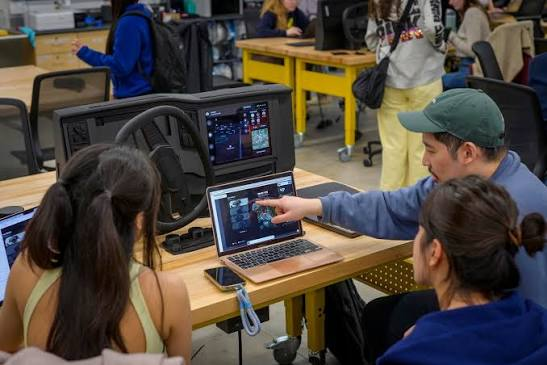
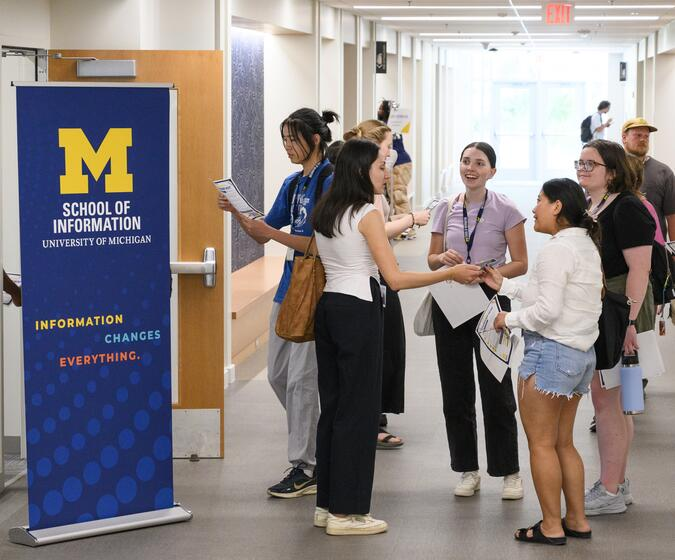
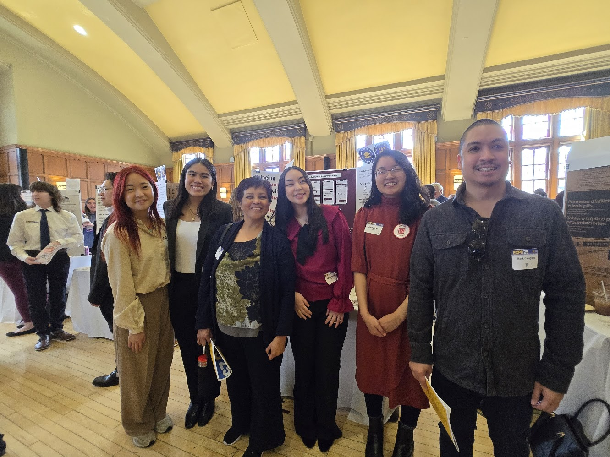

Preparing
Engaged learning at UMSI is different from a typical classroom assignment. You're stepping out of a controlled environment and into a real organization or community, where your role is to listen and contribute—not to arrive as an outside expert with the answers. Taking time to reflect on your own readiness before you commit to a project helps you show up as a better partner.
- Develop social and community awareness: Examine your identity, positionality, assumptions, and privileges. Learn about the community's history and consider how power may affect participation and decision-making.
- Assess team readiness: Identify each team member's skills, interests, availability, and learning goals. Determine where the team may need additional knowledge or support.
- Begin project scoping: Learn about the organization's needs, intended users, constraints, and desired outcomes before committing to a solution.
Questions to Ask Yourself
- What do I hope to learn from this experience?
- Who will be affected by the project and its outcomes?
- What assumptions am I making about the partner, community, or project?
- What knowledge or perspectives are missing from our team?
Featured Preparation Resources

Applying
Once you have a sense of your own interests, skills, and availability, you're ready to look at open opportunities. Each ELO program has its own project, partner, and time commitment, so it's worth comparing a few before you apply.
Browse current opportunities and apply directly through mCompass: see Featured Programs on the home page for the full list, including the AI Clinic, A2 Data Dive, Alternative Breaks, Student Org Engaged Learning, and Study Abroad.

Accepting an Opportunity
Before you begin the work, confirm what you're committing to—both with your team and with the Engaged Learning Office.
- Understand expectations: Review program requirements, project commitments, leadership responsibilities, deadlines, and expected outcomes before beginning the work.
- Formalize agreements: Document team commitments and scope agreements shared by all stakeholders.
Featured Resources

Know What You're Working Toward
Preparing well is what turns a class deliverable into a reciprocal partnership—one that creates real value for you and for your partner. The work you do here is meant to build:
- Learning: Technical, professional, interpersonal, and ethical skills you can't get in a classroom alone.
- Collaboration: Practice working alongside people outside your team and discipline.
- Partner & community impact: A solution that's genuinely useful to the people you're working with, not just a finished deliverable.
- Professional growth: Experience you can turn into resume, portfolio, and interview material.